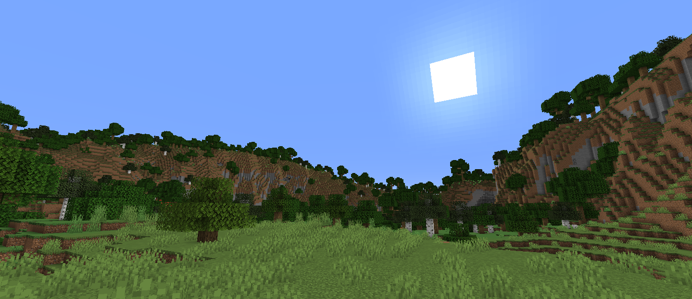

Recent Accomplishments
2023
Project Kickoff
We initiated the project with a full team and defined our objectives.
2024
Development Phase
Completed the development phase and started testing the product.
2025
Launch
Successfully launched the product in the market with great reception.